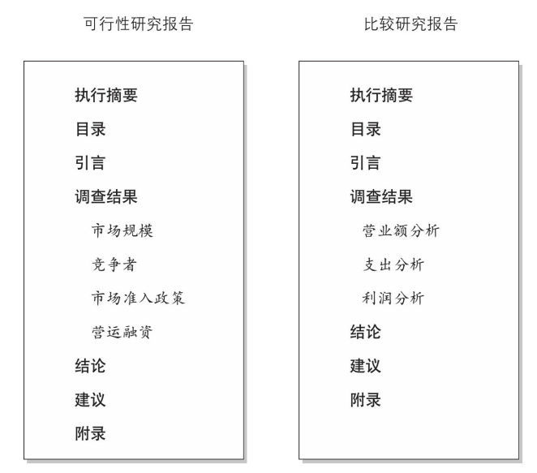

结构
当你说一件事情的时候，确保你说清楚了。
原则1：运用“自上而下”的写作法
先写总结，开门见山
- 日常生活中常见的写作类别多为说明文，包括报纸文章、大学论文、商业备忘和书信。说明文通常解释且总结一个主题或事件
- 说明文的主要目的是解释、告知和说服，而小说或其他创造性写作的主要目的是启发或娱乐
- 多运用“自上而下”的方法写作：
- 最重要
- 次重要
- 次重要
- 最不重要
- 我们在写作时，应该要考虑先给读者一个目标，然后再告诉他们抵达目标的方向，否则就无法以最高效的方式传递信息
- 在没有目的地和飞行方向时，飞行员决不会将飞机驶离跑道。当写作意图是解释或告知时，我们应该先总结，然后再运用细节作为支撑，不要玩“我有个秘密”的把戏
原则2：分解事务
把主题分解成二到四个主要部分，然后运用引导句
- 假设你清楚自己想写的内容，就必须决定你的作品由哪些基础要件组成。可以把主题分解成二到四个主要部分，通常推荐为三个部分，一般不超过四个部分。经典的“五段”写作法可以用一段话概述任意文章
- 引导句，类似主题句，不同的是主题句归纳的是文章或报告中一个单独段落的内容，而引导句总结的是一整篇文章或报告的内容。引导句中的每一事项，在文章或报告的正文中应该延展为至少一个独立自然段
- 在写作中，“三”是个神奇的数字。思考围绕三个关键观点或概念构建你的文章
- 商业报告 包括执行摘要和建议。执行摘要是作者的调查结果、结论和建议的总结，它成于报告前，但写在最后；建议是作者根据自己的结论，陈述认为应该采取的措施
- 商业报告的作用有四种：1.可行性研究；2.比较研究；3.评估研究；4.成本研究


原则3：使用转折词
使用转折词提示写作的方向
- 但是、然而之类的“转折”词被称作语言的交通灯，它们有四大作用：对比、举例、接续和总结

- 最简单的写作方法：
- 选择立场
- 写下结论
- 陈述“有如下几个原因”
- 使用转折词
原则4：回顾六大基本写作结构
使用六大基本写作结构，使观点的顺序安排得当
- 写作中最常用的六种结构包括：
- 范畴结构
- 评价结构
- 时间结构
- 比较结构
- 线性结构
- 因果结构
- 顺序重要的几种结构包括：时间、比较、线性、因果，先讨论最早发生的事件，然后按照时间推进
- 如果想要强调正反的其中一面（或者某个观点），还应当确保结论与此一致
- 在动物学中，你可以从动物的骨架判断出它为何种动物。结构预示内容，文章的重要观点要给予最多关注，且应最先讨论


原则5：整合相似事物
先结束一个主题的讨论，再接着讨论其他主题
- 当我们写作（及说话）时，我们描述的观点应该组合起来，最好是先完成一个主题的讨论，再接着讨论其他主题
风格
简短地展现以便他们阅读，清楚地展现以便他们欣赏，如画般地展现以便他们记忆，最重要的是，准确地展现以便他们被它的光明所指引
原则6：支撑所说内容
使用准确、具体的词汇支撑所说内容
- 好作品和普通作品最大的区别，在于你是否使用了准确、具体的例证
- 当人们读完一篇文章后，能长时间记住的往往是其中的事例和细节
- 简洁和细节之间存在着权衡。充分的细节使文章更长，但这并不意味着冗长。简洁要求句子层面词语数量尽可能少，而充分的论证则可能需要更多句子
- 大部分写作存在内容过于浅薄的问题——太泛。
- 辩论人士格言“没有论证的陈述应当受到无理由的反驳”
- 在打草稿时有一项十分有价值的技巧，就是在写完之后立刻加上“例如”来强调你想表达的观点，以支撑自己的陈述。实践中，要决定文章中“例如”二字的去留，尤其是当你想让观点和分论点顺畅连接时
- 在写作用语上，不要只说“是什么”，还要说“为什么”。提及“为什么”既为写作提供了支撑，又暗示了作者的写作理由
原则7：让你的例证个性化
增加个性化的例子，使文章更难忘
- 个性化的例子通常与代词“我”的使用紧密相边，它会迫使作者以个性化和准确化的方式与所述话题相关联
- 详细的支撑论点会给读者一种感受，即作者本人在这样或那样的情境下会如何处理
- 在正式写作中，如学术论文或商业报告，标准做法是避免使用人称代词“我”
- 作家格言“呈现，而不述说。”
- 支撑所说内容的写作技巧：
- 轶事：修饰观点的小故事
- 引用：尤其是引用伟人或名人所说的话，引语如果选择得当，会使你看起来非常有智慧，还能为你的文章增色不少，使用引语选集或在线引语档案
- 类比：寻找两种完全不相同事物的相似性，帮助读者更清楚地理解给定关系
- 明喻和暗喻：明喻是比喻两种不相似的事物，且常常用“像”、“如”等引入；暗喻直接指示某物是另一物（而不说某物像另一物），“如”或“像”之类的词常常不用；
- 写作应该精雕细琢，但这不是最重要的方面，是写作第二重要的任务。最重要的写作原则是让观点得到充分的论证，细节则使文章更可信、更难忘
原则8：保持简洁
用简单的词语表达你的观点
- 简化写作的最基础的方式是使用较简单的词汇，不是指在写作中完全不使用“大词”（较难、不常使用的单词）
原则9：砍断长句
通过拆分长句，使文章更清晰
- 保持文章内容清晰的方法之一，就是限制长句的使用，最简单的方法是把长句拆分成两到三个短句。使用短句的关键并不是所有的句子都要短，长短句相结合从而创造起伏变化的风格，也是写作艺术需要发挥作用的地方
- 作者在写作中必须判断如何交叉使用长短句，同时还要判断如何变换句型
- “主题句一行原则”在写作中十分有价值。在理想情况下，主题句的长度不应超过一行，以确保读者能迅速理解你的观点
原则10：删除不必要的词
砍掉冗余语句、过多的限定和不必要的自指
- “文章有力贵在简洁。句子不应包含不必要的词语，段落不应包含不必要的句子，同理，一篇文章不应有不必要的段落，机器不应有不必要的零件。这不仅要求作者应保持所有句子简短，避免细枝末节，仅扼要阐明主题，更要斟酌所说的每一个词”
- 当作者在不必要的情况下重复一个词语或一个观点时，就会产生冗余
- 偶尔使用限定词会使读者觉得你理性，但过于频繁地使用限定词会弱化文章含义，显得你在写作时很犹豫，徒增文章篇幅却没有增加内容。像非常、真正的和相当的都是弱化词，大多数情况下都是不必要的
- 避免不必要的短语，如“我相信”“我感觉”和“在我看来”，说明文通常没有必要提醒读者你所写的内容是你的观点
原则11：使用主动语态
多用主动句，少用被动句
- 主动语态更多以行为为导向，更直接、简练，减少了必需词汇量
- 在正常的“主-谓-宾”句子中，施动者出现在句子前端，受动者出现在句子末端。被动句之所以不如主动句直接，因为它颠倒了正常的“主-谓-宾”句子顺序
- 有时被动语态也很好用甚至是必要的，比如在作者必须决定暴露或隐藏施动者身份的情况下，另一个原因是创作的多样性，或者当受动者比施动者重要时
原则12：多用动词，少用名词
不要把动词和形容词名词化
- 词语名词化在写作中是一个十分重要的概念，它描述的是动词和形容词转化成名词的过程。名词化在写作中会弱化文章内容的原因有很多，其中主要是因为它会使句子更长，使读者提取句子含义时更费力
原则13：使用平行句式
用一致、平行的形式表达连串事物
- 写作中的平等，是指一句话中相似的部分应当使用相同的方式表达，从而使句子表达更加清晰有力
- 任何性质的词都可以使用平行结构，最常见的是动词、介词、连词
- 在罗列一连串事物时，使用平行结构要严格遵照原则，即要么每项前面的词都重复，要么只重复第一项的词。因此，对第二项串联事物的处理，决定了其后串联项的形式
- 就动词（或动词形式）和介词而言，第二个动词或介词如果与第一个相同，可以省略
- 关联词包括“或者……或者……”“既不……也不……”“不仅……而且……”“既……又……”。如果动词放在关联词的前半部分的前面，则动词不需重复；如果动词放在关联词前半部分的后面，那么它也要放在关联词后关部分的后面
- 写作一部分是科学，一部分是艺术。需要建构且遵循规则的部分是科学，可以根据每种情境进行变化的部分是艺术
原则14：利用句式变化
变换句子长度和开头
- 用主题开头，句子相关的事物或人
- 用短语开头，是一组不包含动词的词语
- 用从句开头，是一组不包含动词的词语
- 用冠词开头，英文中三个，a，an和the
- 用动词开头，表达行为或存在状态的词
- 用副词开头，是修饰动词、形容词或其他副词的词，一般后面紧跟逗号，也被称为“开句副词”
- 用形容词开头，用来修饰、描述名词和代词
- 用动名词开头，是动词加“ing”的形式。在日常情况下动名词被称为“看起来像动词的名词”
- 用不定式开头，在动词前加“to”形成的名词
- 用关联词开头，是联结单词、短语、从句或句子的词，用于连接句子中成分相同 的部分
原则15：选择恰当的语气
用积极、个人化的语气写作
- 体现在两个方面：积极的或消极的，正式的或非正式的。在大多数写作中运用积极和个人化的语气比较适合
- 影响文章正式性的两个方面是缩略形式和人称代词的使用


- 语气是态度。正式语气就像正装，使作者和读者保持距离。大多数写作更倾向非正式语气
原则16：保持文章性别中立
避免使用阳性泛指指示两种性别
- 阳性泛指是指在涉及两种性别的情形时，仅使用代词“他”，避免使用阳性泛指不仅可避免性别敏感问题，也是公平公正的
可读性
第一稿的愉悦源于欺骗自己它离真正的作品已经相当接近了；其后稿的愉悦部分源于意识到自己没有被第一稿蒙骗
原则17：利用排版和设计
在文字周围增加更多空间，以增强可读性
提高文章可读性的最简单的方法，就是增加文档的页边空白。同样，用空白行把段落隔开，避免一大块文字紧贴页面边缘可以使文章读起来更轻松
原则18：运用可读性工具
突出关键词和短语
力图保留最能定义文章的较大因素，同时寻找小装饰来增强其外观和可读性，这种装饰可能包括粗体、斜体、破折号、项目编号、列举和阴影
粗体：用于强调关键词，从而使关键点在读者面前“跳出来”，但注意不要过度使用，不同斜体、下划线一起使用
斜体：与粗体作用相似，偶尔使用会使文章具有艺术效果，可以考虑使用斜体高亮特定关键词，特别是表示对比的词，注意不要过度使用，容易使读者眼睛疲劳，而且会让文章页面显得拥挤
破折号：可以用于改变句子节奏，以更灵魂的方式对词语和短语进行强调
项目编号：（·）是转述信息的有效工具，尤其适用 于不需要正式句子、以简洁的短语表述信息的情况。在准备简历、幻灯片或传单时，项目编号最常用，但是在论文或报告正文中不建议使用，除非包含在表格中
列举：涉及对要点的编号，在整理观点或数据时，用数字列出项目更正式，而且清楚明了
阴影：在页面上制造对比，可以成为设计商业报告版式的重要工具，常用于为表格顶行（标题行）着色
原则19：使用标题或提要
用标题或提要拆分或归纳文章
- 标题和提要都有助于高效地传递信息，标题的作用是区分章节内容，提要的主要作用则是概述或转述下文
原则20：回顾和修改文章
直到你的文章改到无可修改，否则不能说已经完成了
- 大多数写作高手需要至少三遍稿才能完成一篇短小写作，一部完整作品修改的次数取决于作品的长度和难度
- 经过修改之后，你最终可能会满意自己所写的内容，不愿意再增添或删减任何东西，此时就是你的文章的完成之时——你的文章已经“无可修改”了
- 写作是一个创造的过程，很多人讨厌修改自己的文章，这是人类的本性，回头看很久以前写的东西是一件很棒的事情